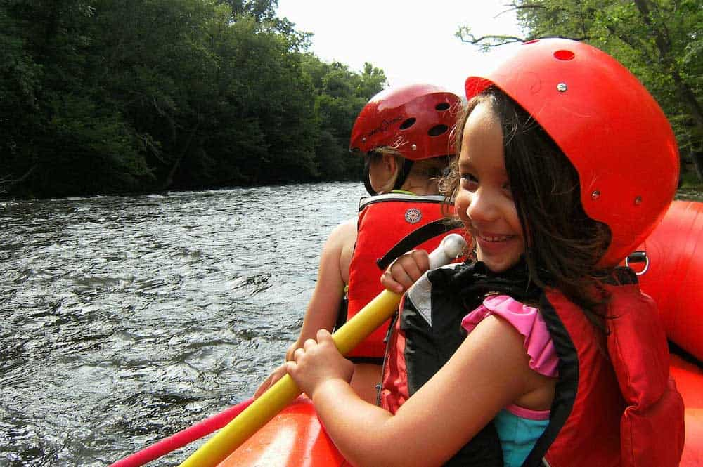
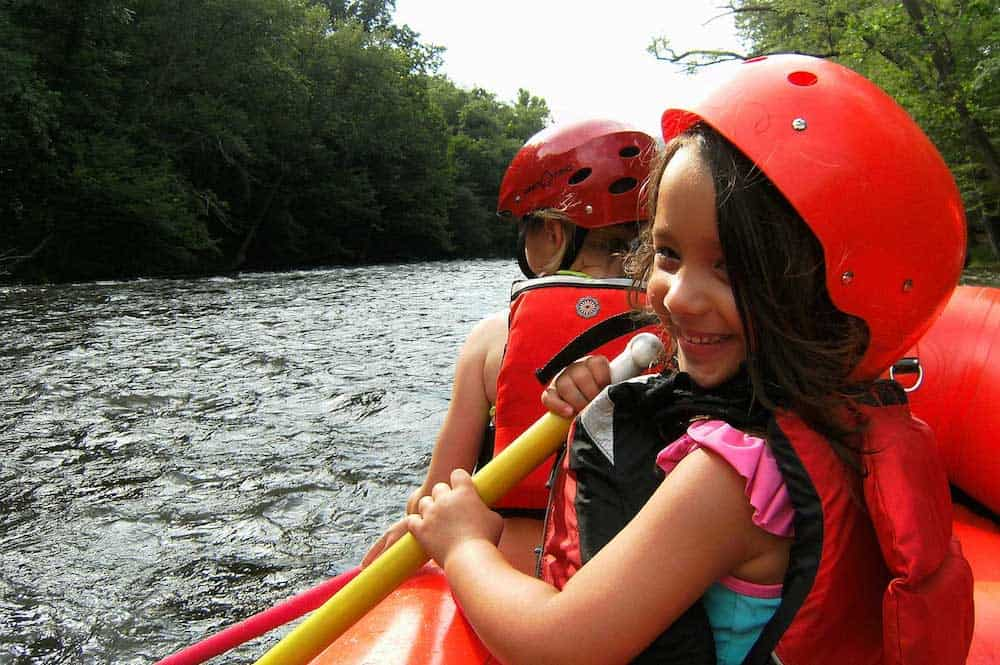

.
Canoon is an adventure sports company specialized in whitewater river descents: rafting, canoeing, and ducking.It introduced rafting to Brazil and has been operating in adventure tourism, sports and environmental education, and corporate services for many years.In addition to a highly specialized team of instructors and technicians. You may find our company in Brotas, Socorro, Campinas, and São Luís do Paraitinga - Brazil.Canoon stands out in its corporate actions, in corporate training for team development, due to the personalized elaboration of activities, created especially for each demand.It also excels in the socio-environmental area, where it develops projects together with the community.


 
